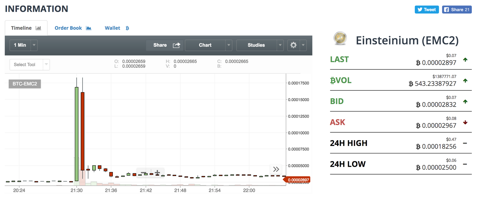

So, here’s a question that you might want to ask yourself, just what exactly is the Telegram pump and dump cryptocurrency trading groups scheme? That is a bit of a mouthful, but there’s no doubt that understanding what it is capable of could change the way in which you approach this entire pump and dump process. After all, it’s hardly the kind of thing that you can do all on your own.
The basic explanation is that this kind of scheme is operating under the radar in a way that is not too different from the Wolf of Wall Street concept. The scheme is full of specific tactics that has the sole focus of effectively taking control of the value of a specific cryptocurrency, and it is easier to do than you may have previously been aware.
Their aim is to inflate the price of the currency in question and to then sell it off again at the new higher price to those individuals that are looking at trying to get in on a cryptocurrency that appears to be on the move. In other words, it is a classic pump and dump approach just it takes place via Telegram.

So, how does it all work?
There are a number of different trading groups online that deal in cryptocurrency, but if they pull together in an organized manner, then they can become far more efficient at what they do. All of this organization is done via Telegram thanks to its secure channels.
By pulling together, it means there are larger numbers involved, so the shift in the value of the cryptocurrency will be greater leading to even more profit for everyone that is in the group. We are not talking about just a handful of people here, but there can easily be tens of thousands involved in the activity, so you can imagine the pulling power that they will all have.
But why Telegram? Well, let us explain.
The Reasons Why Telegram is Used.
Even though Telegram is still relatively new, it has managed to get a significant part of the messenger app market and it is all because of several reasons. First, it is one of the most heavily encrypted apps of its kind on the Internet, so from a security point of view this is able to beat pretty much every other similar app out there on the market.
Next, people can use aliases on the networks, which is very useful in situations such as this where people may want to keep their real details away from the group and go with a pseudonym instead. At least with Telegram there is that option, which is a major draw card.
This makes it pretty obvious as to why Telegram has been selected for this pump and dump approach as there is next to no chance of there being any fallout on their activities since the people that are involved cannot be traced.
So, here is how the entire group scheme goes.
How the Telegram Group Scheme Operates.
People that are in the groups are drawn to the relevant Telegram channel where information is shared amongst the members as to what the plans are going to be and the cryptocurrency that will be targeted. All of those messages are encrypted, so only people in on the action actually know what will be happening.
By bringing in a number of people with the initial pump aspect, it stands to reason that this will hen lead to even more notices being sent out there into the online world promoting the moving currency to encourage other traders to buy. The more people that buy it, outwith the group, then the higher the price is going to move. Once that has been achieved, then the group can sell their coins and keep the profit that has been made in next to no time.
All of this is organized via the Telegram channels, so everyone in the group scheme knows the point of the process that they are at and when they are due to sell. Missing out on this kind of information can prove to be dangerous since you could time it wrong and then have to deal with owning a currency where the price has just dropped dramatically once again.
Is it Effective?
Telegram clearly provides the means by which a group can organize themselves and their strategy, so can we say that it is an effective method? The short answer has to be yes simply because the app is easy to use, provides the security that people are searching for, and people can easily use it to stay on top of the actions in relation to the pump and dump.
Of course, people could argue that other apps could work just as well, but then Telegram is also known for the speed at which the messages can be delivered across the group. When you are looking at people doing thing in an instant, speed could be the difference between making 100% profit or 50% profit, which is a huge drop.
So, that is what we mean by this trading groups scheme for cryptocurrency on Telegram, and there are various opportunities on there at any given time. The key is in you finding a group that offers the correct information at the correct time with it then allowing you to go ahead and make that all important profit. There is no doubt that working in a large group leads to better profits, and as we just said, the speed at which Telegram operates and sends messages out makes it easier to run the entire operation.
Finally, getting involved in this kind of group scheme is also very easy if that is something that is of interest to you. However, just make sure that you do get in on the act at the earliest opportunity so you can learn the basic concept of the group and their strategy before you start trading.